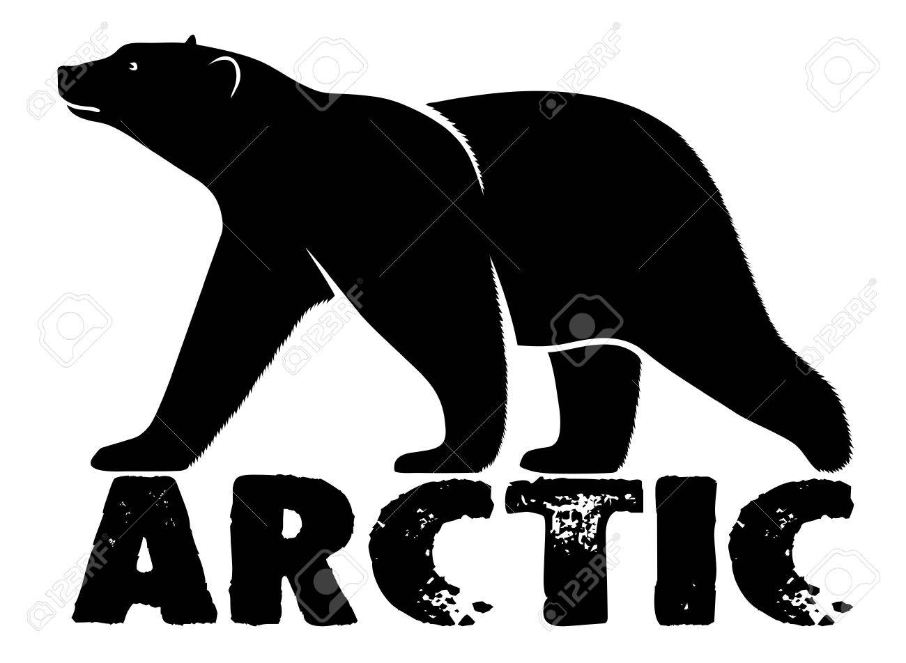

Oso polar en peligro de extincion!!!⚠️
| Alimento | Poblacion | Amenazas | Reproduccion | ||
|---|---|---|---|---|---|
| imagenes | PoblacionNo existen subespecies autínticas de oso polar, debido al reciente origen de la especie (probablemente a finales del Pleistoceno) y la gran movilidad de sus individuos sobre los vastos campos de hielo, lo que reduce el aislamiento genético de estos. Aun así, los especialistas distinguen de un modo informal seis poblaciones mayores:
|
||||
| Justificacion | |||||
|  | |||||